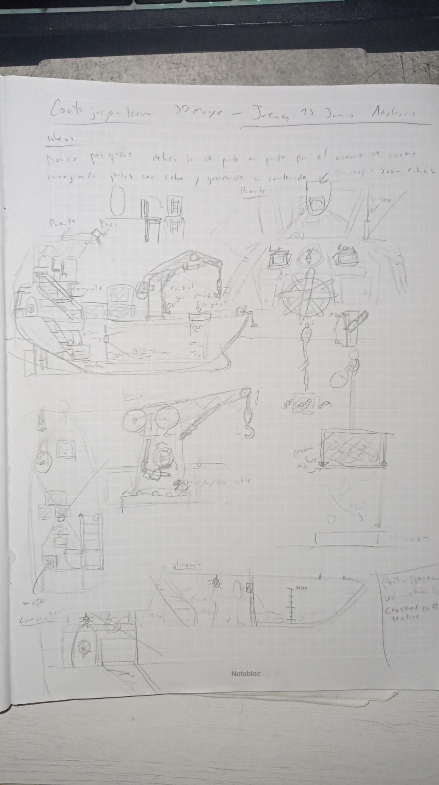
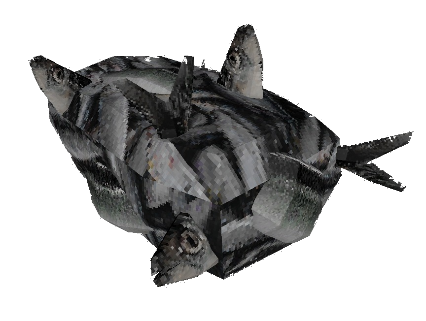

Hi! I'm Ferran, a 22 year old geology drop out, and this is my personal webpage, where I explain the why's and how's of my short fishing horror game created in 2025 Undesired Catch

That's me! In the Jordanian Royal Tank Museum
Undesired Catch started as a side project in june 2024, its creation was intended to fund the main project of the moment, The High School Experience.
This is because, in order to publish a Steam page, valve asks for 100 US dollars to prevent page creation spamming, which I didn't have at the time. That was the case until my mother gave me a few bucks to prevent my wardrobe from starvation, you can guess where those bucks went.
As I was to spend a bit of money on the project, I decided to also spend a little bit more time on it than previously thought, and to take the opportunity to learn how a "real" game is made and published. The first step was to have an idea, what will the game be about? Will it be singleplayer? Will it be a first, third, fourth person game? I gave it a little thought and it seemed obvious that the game had to be a first person linear horror game.
Why? because 1: Small indie horror games have a very healthy playerbase and content-creator echosystem 2: first person linear games are easier to do than third person or RTS style games (and make more sense given the "horror" decision).
But what will the game be about? Horror games suffer from a variety of clichés, which i'm not particularly fond of. Those being: Giant toy creature things that chase you around with a smile on their faces (poppy playtime, FNAF) Mascot horror in general (TGOBB) generic suburban house in the US haunted/stalked, you get the idea.
I wanted to be original, and after a bit of thought I came up with the idea of making a game about fishing crabs, and inside one of those cages, or "pots", there would be a monster, wich would kill you, eventually, I guessed. The game would also have a low poly aesthetic, I admit this is typical of indie games, but as I don't want to spend my next ten years just in the modelling, I thought this was a passable compromise.
With this, I got to work. I started by designing the fishing boat, which the player would use to pick up the "pots" (that's how the cages where crabs are captured are called) and go around the map finding them. The ship needed to have all the elements necessary to fish crabs, those being: a crane to pick up cages, a bridge with the controls of the ship (steering, speeds...), living quarters for the crew (of one) and a hold to store all the catches.
First sketches of Undesired Catch, in this case, the fishing boat.
As I had previous experience with 3d modelling thanks to some antique projects of mine, I had the ship ready in just a few hours.
I then faced my first roadblock. In real life, fisherman throw a hook to a buoy that is associated with a pot, which contains crab. They then retrieve the buoy and use the ship's crane to pick up the pot. The thing is, I had no clue how to do the "throw a hook pick a buoy" thing, no matter where I looked on the internet or what tutorial watched, nothing came to my head. This made me rethink how crabs would be picked up in my game, and after a few days of thinking and trying ideas, the F-POT system arose.
F-POT's are the way crabs (later creatures) would be collected in Undesired Catch. They solve the hook problem by completely bypassing the necessity of throwing a hook to a buoy to then retrieve the jail. How? Like this:

F-POT in action, this is a VERY early version of the game
The main problem was that I needed to come up with a way to pull the pot out of the water without the hook part, this was solved by inventing a mechanism that, at least in the lore of the game, using compressed air supplied by the crane "grabber" to the input of the buoy, makes the pot buoyant and thus, surface.
I then had the idea of not limiting myself to crabs. I do like crabs but as I was making a horror game I thought that I could come up with something more exciting. This is how Amalgams came to life.
Amalgams are the main creatures of Undesired Catch. They are what you have to catch with your ship, and make one of the most appealing parts of the game. They are, as the name suggests, amalgamations of various marine species, such as fishes, arthropods, eels, and some more.
Say hello to Herring Amalgam! A.K.A fish cube
I then made a simple map to sprinkle a few F-POTS in and voilà! A simple game was born. You could go around the map with your ship and pick up a few Amalgams, there wasn't much to it, it was more of a proof of concept than a game at that point.
With the Steam page published I had the opportunity to sign up for one of Steam's most important festivals, the Steam Next Fest. Next Fest is where new upcoming games, in theory developed by unknown and small developers, are promoted by valve themselves. This was a big opportunity for me and I managed to get in at the last moment.
However, I needed a few more things to present my game in the festival. All games participating in Next Fest need to have a trailer in their Steam page, and a playable Demo. I rushed both things, and they came out as expected, badly. But at least they came.
After the festival, which lasted one week, I gained 900 wishlists and a few videos/streams of small creators, which was very cool! I also posted my demo on itch.io which gave me extra feedback I later used to improve the game and the demo itself.
It was october 2024 and the game still hadn't been finished. I procrastinated a lot and felt demotivated as I didn't see a clear path for my game. The game felt cheap and boring to play, the controls where horrendous, I was praised for the ambience but I felt I could do much better, and the game didn't even have a way to end. Then new year came, and a rush of new ideas with it.
First, the map. In the demo, the map consisted of a few rocks placed around forming a few open spaces with F-POT's inside, this was boring, unexciting, non-rewarding, lame, not interesting, and bad in general. To solve this I thought of dividing the F-POT's. By separating them with